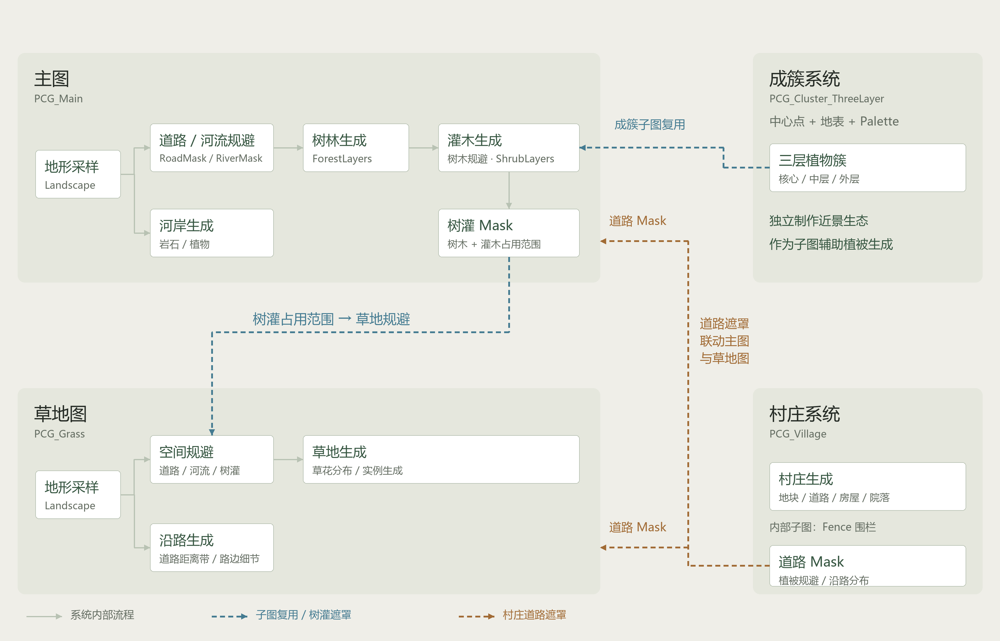
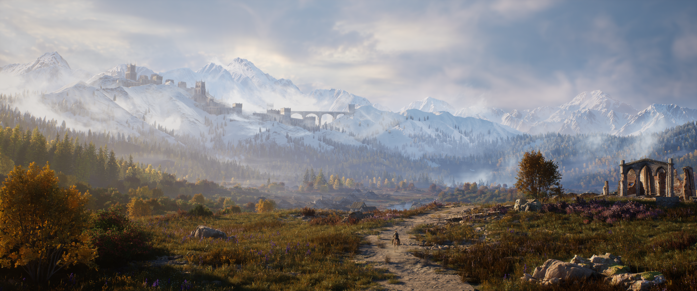

系统架构
主图、草地图、成簇系统与村庄系统通过子图复用和空间遮罩联动：成簇系统辅助灌木生成，主图输出树灌 Mask 供草地规避，村庄道路 Mask 为植被规避与沿路分布提供依据。河岸生成与沿路生成分别保留在主图和草地图内部，各生成模块以一个节点概括。

“晨光越过雪峰，照亮山脚尚未褪尽秋色的旷野。薄雾深处，古老的城堡守着通往群山的长桥，山下的村落升起了第一缕炊烟。旅人沿着旧路向北走去，风从松林间捎来隐约的钟声——在大雪封山之前，这片土地仍等待着远方的来客。”
《高原秋境》是一个以秋季高原生态为主题的植被环境项目。场景围绕雪山下的林地、灌丛与草甸展开，通过树木秋色、草花斑块和植被疏密变化，呈现高原入秋时的景观层次。地形和曲线提供空间边界，森林、灌木、草地与村庄分别组织生成逻辑，再通过遮罩传递彼此的占用范围。
作品重点是让不同尺度的内容形成空间联系：远景由地形与树林建立层次，中景由河岸、灌木和聚落补充结构，近景由草花与局部植物簇丰富细节。各生成图保留独立的调节入口，便于调整植被组合与分布。

主图、草地图、成簇系统与村庄系统通过子图复用和空间遮罩联动：成簇系统辅助灌木生成，主图输出树灌 Mask 供草地规避，村庄道路 Mask 为植被规避与沿路分布提供依据。河岸生成与沿路生成分别保留在主图和草地图内部，各生成模块以一个节点概括。

主图从地形采样出发，通过道路与河流遮罩筛选植被范围，依次组织森林、灌木生成，并汇总树灌占用范围供草地图规避。图内还包含河岸生成分支，按水域距离和坡度限定分布，使岩石朝向随河道变化，补充岸边岩石与植物。
森林先按高度、坡度与噪声划分树种区域，再独立控制各区密度；灌木规避树木后，以局部点网格和成簇子图补充林下层次。树木与灌木的占用范围合并为 Mask，供草地图规避。
AssetLibrary/HighlandsInGold/assets/GraphForest.pngAssetLibrary/HighlandsInGold/assets/GraphShrubs.png成簇图围绕中心点生成核心、中层和外层植物，再逐株贴地，形成一小片生态。一个 Palette 统一控制三层形状、植物组合与密度，各物种独立筛选；既可单独制作近景，也可作为子图在上游采样点上生成。
AssetLibrary/HighlandsInGold/assets/GraphCluster.pngAssetLibrary/HighlandsInGold/assets/Palette.png草地图规避道路、水域和树灌 Mask 后，先用噪声控制草地与空缺，再在保留区域铺设局部点网格、扰动并贴地。第二层噪声组织草花斑块，结合地形属性和坡度筛选，使地表分布保留疏密变化。图内的沿路生成分支读取地形道路与村庄道路 Mask，以距离带限定范围，补充道路附近的细节。
AssetLibrary/HighlandsInGold/assets/GraphGrass.png村庄模块由 AI 全权负责技术实现。我负责提出生成规则、提供布局参考并反馈修改意见；AI 将需求拆解为蓝图、PCG 图与可复用子图，完成搭建、调试和迭代。
我给出的规则是：用闭合 Spline 圈定村庄范围，通过分区数量和 Seed 调整布局；大地块按面积继续细分，分区边界形成主次道路。房屋需要适配现有资产、避开过陡地面，并形成中心密、外围疏的分布；主房屋、马棚和装饰分开组织，兼顾多户院落与独户小院。
AI 采用递归空间切分组织地块，组合 PCG Primitives 完成区域筛选、退让、填充和占地去重，再通过射线贴地与坡度筛选放置建筑。院落从可用地面中扣除房屋占地、裁出门洞，调用独立的 PCG_Fence 子图沿 Spline 排布石墙或木栅栏。道路最终采用 Spline Mesh，并提供道路 Mask 与植被系统联动。
迭代从“分区、道路、房屋”的基础版本开始。我随后提出道路更平滑蜿蜒、缩小房屋与院落间距、围墙只围住宅小院、支持可选院门，并暴露整体朝向、基础密度和向外衰减参数。针对密度调高后仍过稀的问题，AI 调整了按房型占地填充及道路退让逻辑；马棚也从固定数量改为随区域面积分配。每轮根据生成结果继续反馈、修改和复测，同时按我的要求整理节点分区与注释，逐步形成可调节的村庄模块。
AssetLibrary/HighlandsInGold/assets/GraphVillage.png制作过程中，我通过规则描述、参考图与实际生成结果向 AI 提出需求，让 AI 辅助实现部分 PCG Primitive 功能、整理节点和注释、排查连线与参数问题，减少重复操作和调试时间。植被部分以辅助实现和修正为主；村庄模块则由 AI 独立承担技术实现，我负责规则、视觉要求和迭代反馈。整体采用“提出规则 → 实现 → 查看结果 → 反馈修改 → 复测”的开发方式。
性能控制主要围绕生成数量与可见范围展开：通过分层密度、空间遮罩和坡度筛选减少无效分布，草地按组设置距离剔除，并保留开关以便比较远景覆盖效果。调整时兼顾近景细节和远景密度，避免所有区域都使用同样的植被数量。
实测 3000 × 3000 米区域内，Main 生成的树林、灌木和河岸内容共计 751,837 个实例；300 × 300 米区域内，Grass1 生成的草地内容共计 248,088 个实例。实际观察的生成时间约为 5–7 秒。
Landscape 地形使用 Gaea 制作，其余场景资产来自 Fab 商城。本项目的制作重点是秋季高原植被环境的组织、场景整合与 PCG 生成规则。